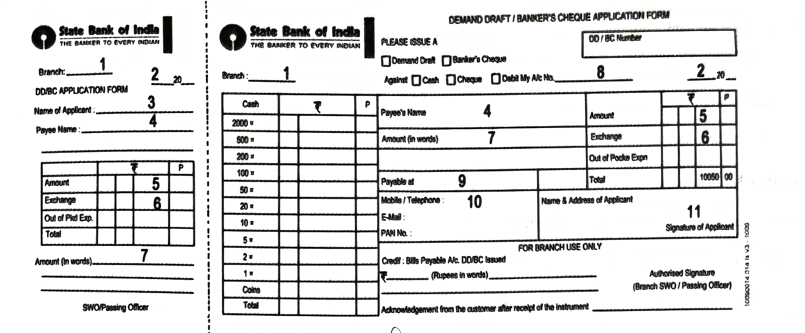

4. Read the following passage and answer ANY FOUR questions given
below.
4 × 1 = 4M
Della finished crying. She went up to the looking-glass and began to powder her cheeks. Then she stood by the window and looked out dully at a grey cat walking on a grey fence in a grey backyard. Tomorrow would be Christmas Day, and she had only $1.87 with which to buy Jim a present. She had been saving every penny she could for months, with this result. Twenty dollars a week doesn’t go far. Expenses had been greater than she had calculated. They always are. Only $1.87 to buy a present for Jim. Oh, the many happy hours she had spent planning for something nice for him! Something fine and rare, worthy of the honour of being owned by Jim.
i) Why was Della crying?
ii) Where did Della go?
iii) Where did Della stand?
iv) Where did Della look out?
v) The day before Christmas is called ________ (Fill in the blank choosing from the options.)
vi) Why had Della been saving every penny for months?
vii) What did she do to get the money?
viii) Write the synonym of the word ‘gift’ from the passage.
5. Read the following passage carefully and answer ANY FOUR questions
given after it in a word or in a sentence each.
4 × 1 = 4M
Technology that is used in ISRO and NASA defence applications shines here atop the towers (gopurams) of Sri Lakshmi Narasimha Swamy Temple. The recently-reconstructed temple at Yadagirigutta has many unique features to its credit. One among them is the use of Nano Tech Gold Deposition (NTGD) technology. It went into the electroplating of gold onto the fifty-two intricately-designed Kalasams that adorn the gopurams. It replaced the conventional gold coating. It all began when the steely-nerved and iron-willed Kalvakunta Chandrasekhar Rao wanted the gold’s luster to last for fifty years. Gold-coated objects shine just for fifteen years. Things moved fast to materialise the big dream. The Chennai-based Smart Creations was assigned the job. They studied various technologies adopted in temples, masjids and other religious places around the globe. Finally, they chose this NTGD Technology. This method consumes less gold. The gold is hundred percent recoverable. And the glitter withstands the vagaries of weather and shines for decades! Sculptural innovations add value to the spiritual experience of the pilgrims who visit this hill temple!
i) Name the technology used to electroplate gold onto the ‘Kalasams’ of the hill temple.
ii) Who took up the job of electroplating the Kalasams with gold?
iii) How long does the glitter last in conventional gold casting?
iv) Write three advantages of using NTGD technology.
v) What does the expression ‘the big dream’ refer to?
vi) Write the synonym of the word ‘luster’ that you find in the passage.
vii) Name the presiding deity of this hill temple.
viii) Write the part of speech of the word ‘unique’.
6. Study the advertisement given below and answer questions given
after it.
4 × 1 = 4M
i) What is the causative agent of COVID-19?
ii) Who has issued this advertisement?
iii) List any two symptoms that should not be ignored.
iv) Write any two COVID-19 preventive measures.
v) Identify the safety tracker app in the advertisement.
vi) Write the word used in the advertisement to mean “the feeling of vomiting.”
vii) What is the COVID-19 guideline for social distancing?
viii) COVID-19 is caused by virus. Write true or false.
7. Read the bar graph below and answer the questions given after
it.
4 × 1 = 4M
Gita is a housewife. She saves a small amount of money every month. However, it is not uniform. The bar graph gives information on Gita’s savings for the first five months of the year.
i) What does the bar graph present?
ii) In which month did Gita save the highest amount?
iii) During which two months did Gita save very low amounts?
iv) How much did Gita save in the month of May?
v) How much did she save in the month of April?
vi) How much more did she save in April than in March?
vii) In the month of May, Gita saved Rs. 300. Write true or false.
8. Rewrite the following passage / sentence using punctuation marks
wherever necessary.
8 × ½ = 4M
mahatma Gandhi deplores railways and steam boats and machinery; he would like to undo the whole of the Industrial Revolution. You may never have an opportunity of actually meeting anyone who holds this opinion because in Western countries most people take advantage of modern techniques for granted.
9. Match the following words in Column-A with their meanings or
definitions in Column-B.
4 × 1 = 4M
| Column A | Column B |
|---|---|
| i) altruism | a) having the freedom to control its own affairs |
| ii) anarchy | b) not identified by name |
| iii) anonymous | c) unselfish interest |
| iv) antidote | d) who doesn’t believe in God |
| v) atheist | e) the absence of government |
| vi) autonomous | f) a substance acts against the effect of poison |
10. Fill the blanks in the following sentences with suitable
idiomatic expressions given below. Make necessary changes in the
idioms if needed.
4 × 1 = 4M
| once in a blue moon | an arm and a leg | leave no stone unturned |
| a drop in the ocean | bite one’s tongue | keep at arm’s length |
1) Sitara wanted to speak out about the unfair decision. But she ________.
2) President Kalam ________ to motivate the youth.
3) My friend attends classes ________.
4) The small donation was just ________ for the orphanage.
5) Though I like the dress, I cannot afford to buy it as it costs me ________.
6) I always ________ my enemies.
11. Make four meaningful sentences based on the verb patterns given
below.
4 × 1 = 4M
An example is given as a model.
| Subject | Transitive Verb | Object |
|---|---|---|
| She | loves | music |
1) ____________________________
2) ____________________________
3) ____________________________
4) ____________________________
5) ____________________________
12. Fill in the blanks of the given bank form based on the
information furnished below.
8 × ½ = 4M
You are S. Srinivas, staying at Vidyanagar, Adilabad. You want to purchase some books from ‘Assorted Book Store’, Hanmakonda. Apply for a Demand Draft of Rs. 3,600/- today in favour of the book store payable at the SBI, Hanmakonda Main Branch. The exchange to be paid is Rs. 40/-.

1) ____________________________
2) ____________________________
3) ____________________________
4) ____________________________
5) ____________________________
6) ____________________________
7) ____________________________
8) ____________________________
9) ____________________________
10) ____________________________
11) ____________________________
13. Prepare a Curriculum Vitae / Resume / Bio-data in response to the
following advertisement.
1 × 4 = 4M
14. Write a letter to the collector of your area requesting him/her
to be the chief guest of an inter colony sports fest your society is
organizing.
1 × 4 = 4M
(OR)
Write a letter to your friend telling him/her about new college you joined recently.
15. Read the following passage and make notes. Add a suitable
title.
1 × 4 = 4M
Progress in life depends a good deal on crossing one threshold after another. Some time ago a man watched his little nephew trying to write his name. It was hard work, very hard work. The little boy had arrived at an effort to clear a threshold. Today he writes his name with comparative ease. Some people make the mistake of steering clear of thresholds. One man went into an entirely new business when he was past middle life and made a success of it. De Morgan didn’t start to write novels until he was past sixty. Psychologists have discovered that man can continue to learn throughout life. And it is undoubtedly better to try and fail, than not to try at all. Then, one can be placed in the category of the Swiss mountaineer of whom it was said, “He died climbing.” When a new difficulty raises to obstruct your path, do not complain. Accept the challenge. Determine to cross this threshold as you have crossed numerous other thresholds in your past life. In the words of the poet, do not rest but strive to pass from dream to dream.
16. Mark the stress for ANY EIGHT of the following words.
8 × ½ = 4M
i) dispute ii) describe
iii) enjoy iv)
eighteen v) formation
vi) famous vii) government
viii) hotel ix)
incident x) mistaken
17. Imagine you got the first rank in the intermediate first year
examination. Your close friend has come to congratulate you. How do
you share your experience with him? Write a dialogue between you and
your friend.
1 × 4 = 4M
(OR)
Write a dialogue between a bookseller and a customer.